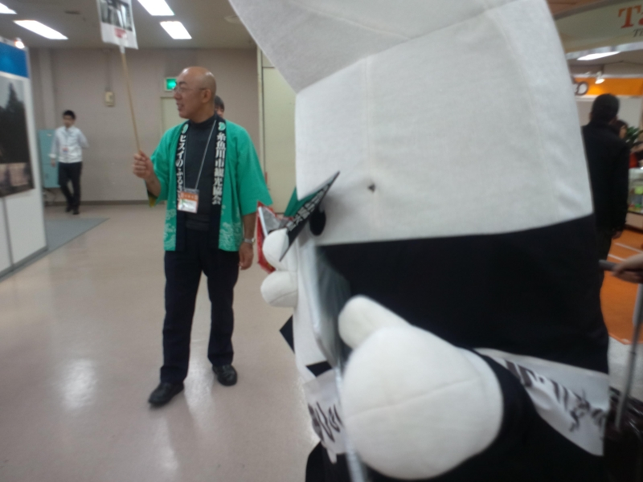
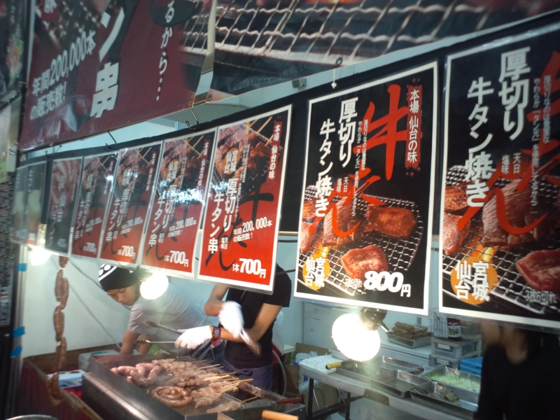
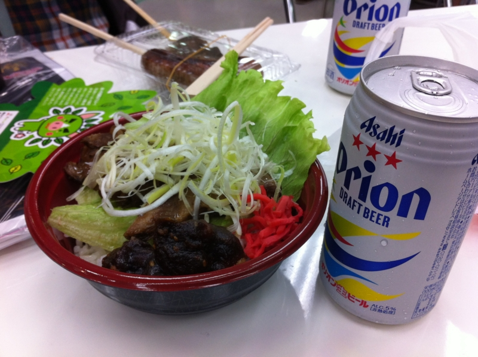
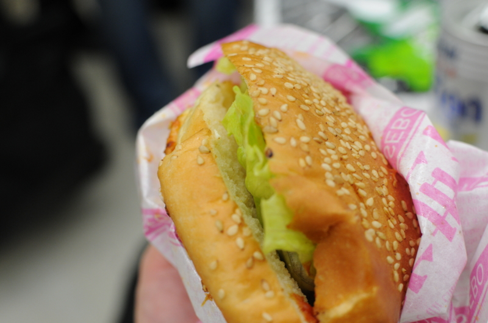

旅フェア日本2012 というものに行ってきた
公開日：
@sunmason と池袋でデートしてきた。途中、街の中で遭難したのでルノアールに避難して迎えに来てもらった。申し訳ない。池袋は昔、大型トラックでガードレールぶっ壊してからあまり近寄りたくない場所になっている。要するに、鬼門なんだ。
それはともかく。今回の目的地はココ。
なんか観光誘致のためのイベントらしいのですよ。旅する前に、旅しようみたいな。入場料は 500 円。SUICA などで入場できる仕組みだったのだけど、途中、機械が壊れていたりしてあんまり機能してなさそうだった。

全国のゆるキャラ総動員。最近は増えすぎて、よっぽどインパクトのあるやつしか記憶に残らない。*1

あとはごはんですな。

オリオンビール＋ソーキ丼で沖縄っぽい昼食をとる。なんか甘くてちょっとお酒臭い味噌がついているので、それをぐちゃぐちゃにかき混ぜて食べるのだそうな。案外おいしい。

せっかく来たのだからと、佐世保バーガーのハーフも追加。肉汁たっぷりのハンバーグと焼きたての目玉焼きのおかげで、マクドよりは全然おいしい。けれど、ちょっと食べすぎてかなりお腹がやばいことになった。
なんとか席を確保し、出し物を見ながらごはん。今年の大河ドラマは“新島八重（新島襄の奥さん）”らしいです。福島にゆかりのある人らしいですね。
こういうイベントはあまり来たことがないのだけど、近場でやるならまた行きたいかもしれない。旅行かぁ……行きたいところはいっぱいあるんだけど、先立つものがないんだよねぇ。今のところ、国内なら九州（とくに大分）、海外なら台湾に行きたいわん。氷見で寒ブリも食べたいし、弟がしきりに勧める会津にも行ってみたい。
*1:グラサンに隠れたつぶらな瞳に萌える